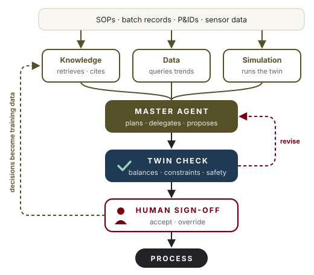
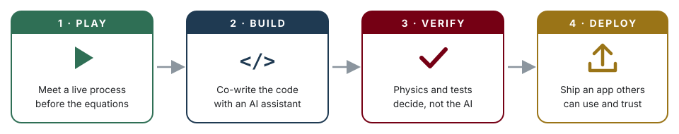

Course series / Course 3
Course 03 Designed
Agentic AI for Process Operations
Graduate course
Design AI agents that reason over process knowledge, propose actions, and prove them on a digital twin before anything touches the plant.

Why this course
AI is strong at two things: retrieving information from a very large corpus, and reading it to find context. It is weak at causal reasoning from small data, and it can be confidently wrong. For process work, where data are scarce and mistakes are expensive, that combination demands design, not trust.
We once stored information. Then we stored data. Now we can store reasoning, in agents that read, plan, call tools and act. But a plant is not a chat window. Every proposal an agent makes is grounded in SOPs and data, then checked on a digital twin against first principles before a person sees it. The instructor has built and deployed decision systems in production, and the course teaches the patterns that survive contact with operations.
An agent may propose. Physics checks. A human decides.
Who it is for
Graduate students
Build a research-grade agentic system on a process problem of your own, with evaluation you can defend.
Researchers
Learn the architecture behind verified agents for self-driving laboratories and automated experimentation.
Practicing engineers
Turn SOPs, batch records and deviation reports into an assistant that cites its sources and shows its work.
Technical leaders
Learn enough to scope a pilot, ask vendors the right questions, and audit what an agent is allowed to do.
What you will be able to do
- Explain what makes an agent. Describe goal, tools, memory and loop, and name the failure modes in operations.
- Ground agents in process knowledge. Retrieve from SOPs, P&IDs and batch records, with citations for every claim.
- Give agents tools. Connect simulators, databases and lab systems through function calls and the Model Context Protocol.
- Orchestrate a hierarchy. Coordinate a master agent, specialist agents and a critic that hold up under review.
- Verify on a twin. Apply balance checks and constraint validators so no proposal reaches a human unchecked.
- Evaluate, govern and deploy. Measure agents with traces and benchmarks, keep a human in the loop, and ship a service.
The architecture you will build
Every week adds one layer to a single system, from the documents and sensors at the bottom to the human sign-off at the top.
flowchart TD
A["Sensors and documents"] --> B["Specialist agents"]
B --> C["Master agent"]
C --> D["Proposal"]
D --> E["Twin check"]
E --> F["Human accept or override"]
F --> G["Plant"]
F -.->|"decisions become training data"| B
The twin is the gate: a proposal that breaks a mass balance or a constraint is sent back before it costs anyone’s attention. Each accept or override is logged, so expert judgment becomes data the agents learn from.
Seven weeks, four moves
The course moves from Play to Build to Verify to Deploy, so you watch an agent work before you build one, and you prove it safe before you ship it.

Where agents help, and where they do not
| Strong at | Weak at |
|---|---|
| Retrieving the right paragraph from thousands of SOPs and batch records | Causal reasoning from small, noisy process data |
| Summarizing deviation reports and finding context across documents | Knowing when they are wrong; errors arrive with full confidence |
| Drafting structured plans, checklists and investigation reports | Respecting mass and energy balances without being forced to |
| Calling tools such as calculators and simulators in sequence | Staying inside operating limits unless a validator enforces them |
The capstone
A multi-agent operations assistant that diagnoses a process deviation, grounds every claim in documents and data, verifies its proposed action on a twin, and routes it to a human for sign-off, with a full audit trail.
- A working agent hierarchy that runs end to end on the simulated plant and document corpus
- A twin-in-the-loop verification layer with documented guardrails and failure cases
- A technical memo with evaluation results, an audit trail and a deployment plan
How every week runs
Concept
One hour on the idea of the week, framed as an engineering problem with a plant example.
Studio
One hour of guided building: you and your AI assistant work through a design together, live.
Lab
One hour of hands-on work in a browser notebook, ending in a working piece of the system.
What you need, and what you don’t
You need
A laptop, a web browser, a free AI assistant account, and a process problem you care about.
You don’t need
Prior coding, a command line, Git, installations, or access to a real plant. A simulated plant and a document corpus are provided.
Tools you will meet
Claude ChatGPT Gemini Copilot Cursor Google Colab Python Model Context Protocol Vector search Knowledge graphs Process simulators Docker GitHub
After this course
- Lead an agentic-AI pilot in operations, R&D or tech transfer.
- Specify and audit vendor AI agents against a clear standard of evidence.
- Start research on verified agents for self-driving laboratories.
- Bring a documented, evaluated prototype to your team or committee.
Continue with Course 2: Digital Twins for Process Engineering or revisit Course 1: Reinforcement Learning for Chemical Engineers.
Course designer and instructor
Co-developed with Dr. Nigel F. Reuel, Iowa State University
Your instructor
Sakib Ferdous, Ph.D.
Sakib is a chemical engineer and AI researcher who builds digital twins and learning controllers for bioprocesses, and carries them from equations to deployed tools. He holds a Ph.D. in Chemical Engineering from Iowa State University and is the first graduate of Iowa State’s M.Sc. in Artificial Intelligence. His doctoral work built Game of Cells, a cell-culture digital twin for training control policies, and reinforcement-learning strategies for CAR T-cell expansion and fed-batch enzyme production, published in Biotechnology and Bioengineering and the AIChE Journal.
He then took the same ideas into production. At Corteva Agriscience he deployed a company-wide decision pipeline on Docker and Kubernetes. At Craft BioSolutions, a startup founded on this research, he co-owns the physics-based bioreactor twin and its device-to-cloud stack. He learned AI for chemical engineering the hard way, back when the code was the wall. These courses are built so the next engineer does not have to.
- EducationPh.D. Chemical Engineering and M.Sc. Artificial Intelligence, Iowa State · B.Sc. Chemical Engineering, BUET
- IndustryPostdoctoral Research Associate, AI in Plant Breeding, Corteva Agriscience (2025–)
- StartupHead of Bioprocess Automation, Craft BioSolutions (2025–)
- NextMIT Initiative for New Manufacturing, AI agents that learn bioprocesses (from January 2027, planned)
- TeachingAIChE 2026 Education Division talk 217c · APEX and WiSE AI-in-ChemE workshops · mentee to first-author paper (2026)
- LeadershipNSF I-Corps Entrepreneurial Lead · CEGSO President · GPSS Senator, Iowa State
Full materials on request
The complete course package is ready to share
Session slide decks, browser notebooks, the instructor guide and the capstone briefs are shared with collaborating faculty, departments and industry partners. Write to ask for a walkthrough, a pilot offering, or the materials for one course.
Sakib Ferdous · ferdous1418@gmail.com · +1 515 686 7280
- Slide decks for all 21 sessions
- Browser notebooks (Google Colab)
- Instructor guide and timing notes
- Prompt libraries for each lab
- Rubrics and capstone briefs
- Simulators and datasets